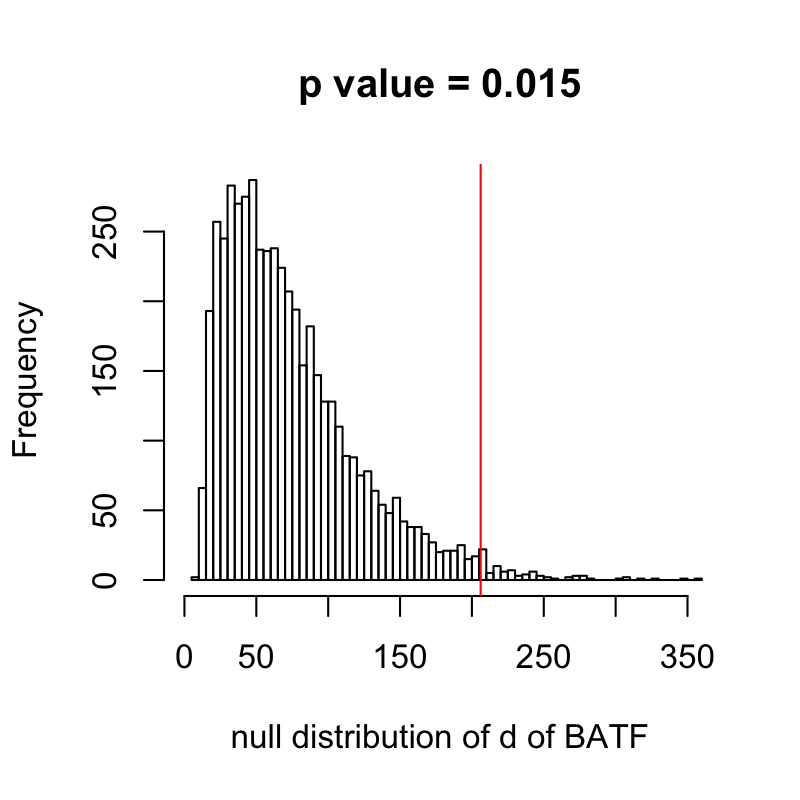

Analysis of African American Co-expression Network
Tae Kim
7/9/2019
Last updated: 2019-07-11
Checks: 6 0
Knit directory: diffNet/
This reproducible R Markdown analysis was created with workflowr (version 1.2.0). The Report tab describes the reproducibility checks that were applied when the results were created. The Past versions tab lists the development history.
Great! Since the R Markdown file has been committed to the Git repository, you know the exact version of the code that produced these results.
Great job! The global environment was empty. Objects defined in the global environment can affect the analysis in your R Markdown file in unknown ways. For reproduciblity it’s best to always run the code in an empty environment.
The command set.seed(20190331) was run prior to running the code in the R Markdown file. Setting a seed ensures that any results that rely on randomness, e.g. subsampling or permutations, are reproducible.
Great job! Recording the operating system, R version, and package versions is critical for reproducibility.
Nice! There were no cached chunks for this analysis, so you can be confident that you successfully produced the results during this run.
Great! You are using Git for version control. Tracking code development and connecting the code version to the results is critical for reproducibility. The version displayed above was the version of the Git repository at the time these results were generated.
Note that you need to be careful to ensure that all relevant files for the analysis have been committed to Git prior to generating the results (you can use wflow_publish or wflow_git_commit). workflowr only checks the R Markdown file, but you know if there are other scripts or data files that it depends on. Below is the status of the Git repository when the results were generated:
Ignored files:
Ignored: .DS_Store
Ignored: .Rhistory
Ignored: .Rproj.user/
Ignored: R/.DS_Store
Ignored: R/.Rhistory
Ignored: analysis/.DS_Store
Ignored: analysis/.Rhistory
Ignored: analysis/AA_EA_cache/
Ignored: docs/.DS_Store
Ignored: docs/figure/.DS_Store
Ignored: src/.DS_Store
Untracked files:
Untracked: .Rprofile
Untracked: .gitignore
Untracked: analysis/figure/AA_EA.Rmd/
Untracked: data/
Untracked: docs/figure/liquid_assoc.Rmd/
Untracked: docs/figure/simulation1.Rmd/
Untracked: docs/figure/simulation2.Rmd/
Untracked: docs/figure/simulation3.Rmd/
Untracked: docs/figure/simulation4.Rmd/
Untracked: man/do_polyroot_arma.Rd
Untracked: man/do_polyroot_cpp.Rd
Untracked: man/post_score.Rd
Untracked: old_analysis/
Untracked: targeted_TF_AA.txt
Untracked: wandv.R
Unstaged changes:
Modified: .Rbuildignore
Modified: DESCRIPTION
Modified: NAMESPACE
Deleted: analysis/AA_vs_EA_skin_not_sun_exposed.Rmd
Deleted: analysis/AA_vs_EA_skin_not_sun_exposed.pdf
Modified: analysis/W_and_V_alt.Rmd
Modified: analysis/_site.yml
Modified: analysis/index.Rmd
Deleted: analysis/license.Rmd
Deleted: analysis/score_test.R
Modified: docs/.nojekyll
Modified: dynamic_coexpression_githubversion.tex
Deleted: src/diffNet.so
Modified: src/utilities.cpp
Note that any generated files, e.g. HTML, png, CSS, etc., are not included in this status report because it is ok for generated content to have uncommitted changes.
These are the previous versions of the R Markdown and HTML files. If you’ve configured a remote Git repository (see ?wflow_git_remote), click on the hyperlinks in the table below to view them.
| File | Version | Author | Date | Message |
|---|---|---|---|---|
| Rmd | 906e300 | tk382 | 2019-07-11 | wflow_publish(c(“analysis/AA.Rmd”, “analysis/AA_EA.Rmd”), republish = TRUE) |
| Rmd | acc3d14 | tk382 | 2019-07-04 | modified analysis files |
| html | 68a6d1e | tk382 | 2019-04-07 | Build site. |
| html | 432088c | tk382 | 2019-04-07 | Build site. |
| html | dc21566 | tk382 | 2019-04-03 | Build site. |
| html | 368bd3e | tk382 | 2019-04-02 | Build site. |
| Rmd | 00c0059 | tk382 | 2019-04-02 | wflow_publish(c(“analysis/AA.Rmd”, “analysis/AA_EA.Rmd”)) |
| html | 4053f50 | tk382 | 2019-04-01 | Build site. |
| Rmd | 1f68ec1 | tk382 | 2019-04-01 | wflow_publish(“analysis/AA.Rmd”) |
| html | b8ce5bb | tk382 | 2019-04-01 | Build site. |
| Rmd | 058b38f | tk382 | 2019-04-01 | wflow_publish(c(“analysis/index.Rmd”, “analysis/license.Rmd”, “analysis/about.Rmd”, |
1. Data pre-processing
We use the RNA-seq expression level data provided by GTEx, which has been already pre-processed. We choose to study not-sun-exposed suprapubic skin tissue as a pilot study because we expect to see some ancestry effect on the expression level on the skin tissue. Genes were selected based on expression threshold of \(>0.1\) RPKM in at least 10 individuals and \(\geq\) reads in at least 10 individuals. Then the expression values were quantile normalized to the average empirical distribution observed across samples. That means, each gene has the same distribution across the individuals. Then they were inverse quantile normalized to fit standard normal distribution.
(a) Load and clean the data
load("data/skin_not_sun_exposed_suprapubic.Rdata")
exp = skin; rm(skin)
colnames(exp) = gsub("[.]", "-", colnames(exp))
ind = which(colSums(!is.na(exp)) == 0)
exp = exp[,-ind]
ind= which(rowSums(!is.na(exp)) == 0)
exp = exp[-ind, ]
invisible(gc())
finalA = read.table("data/finalA.txt", header=TRUE)
AAs = intersect(colnames(exp), finalA$subject)
EAs = colnames(exp)[! colnames(exp) %in% finalA$subject]
newA= data.frame(subject = AAs, A = finalA[match(AAs, finalA$subject), 2])
Y = exp[, c(AAs, EAs)]
rm(exp); invisible(gc())
EA_A = data.frame(subject = EAs, A = 0)
X = rbind(newA, EA_A)
rm(newA, EA_A, AAs, EAs, ind, finalA)
rownames(Y) = sapply(strsplit(rownames(Y), '[.]'), function(x) x[1])
Y = t(Y)
ind = which(X$A > 0)
Y = Y[ind,]
X = X[ind, ]
orig = Y(b) scale the data and regress out the mean
Wefirst scale the gene expression level matrix to have variance 1. Then we regress out ancestry from the gene expression level to remove the mean effect.
orig_A = X$A
X$A = scale(X$A) * sqrt(length(X$A)) / sqrt(length(X$A)-1)
Y = resid(lm(Y~X$A))
Y = scale(Y) * sqrt(length(X$A)) / sqrt(length(X$A)-1)#reference chi squared distribution to compare the null distribution
ref_chisq = qchisq(seq(0,1, length=ncol(Y)-1), 1)# number of permutations
B = 5000(c) match ENSEMBL ID and hgnc symbols
Using data set from https://www.genenames.org/download/custom/, we match the Ensembl gene IDs to HGNC symbols for better readability.
hgnc_names = hgnc[match(colnames(Y), hgnc$`Ensembl gene ID`), "Approved symbol"]
ref = data.frame(ensembl_gene_id = colnames(Y), hgnc_symbol = hgnc_names)
ref$ensembl_gene_id = as.character(ref$ensembl_gene_id)
ref$hgnc_symbol = as.character(ref$hgnc_symbol)2. Transcription Factors against all other genes
Since transcription factors usually regulate the transcription of multiple genes, we believe they were appropriate targets to study their variance in activity across different ancestry. We use the list of transcription factors from http://www.tfcheckpoint.org/.
(a) Read in TF data
TF = fread("data/not_build/TFcheckpoint.txt", header=TRUE)
TF = setDF(TF)
TF = TF[TF$TFClass_human == "TFclass", ]
TF = TF[,1]
TF_results = ref[match(TF, ref$hgnc), ]
genes = colnames(Y)[which(colnames(Y) %in% TF_results$ensembl_gene_id)]
numTFs = length(genes)
TF_results = TF_results[match(genes, TF_results$ensembl_gene_id), ](b) Test all TFs against the rest of the genes
For each transcription factor, we calculate its score statistics against all other genes. Then we add up the scores for each transcription factor and see if any stands out.
scores = matrix(0, length(genes), ncol(Y)-1)
for (i in 1:length(genes)){
ind = which(colnames(Y) == TF_results$ensembl_gene_id[i])
W = store_W_c(Y[,ind], Y[, -ind])
V = store_V_c(Y[,ind], Y[, -ind])
scores[i,] = get_score_W_c(X$A, W, V)
}(c) plot the result
The plot below shows that some transcription factors stand out from the rest with high score statistics. The red line shows the expected value based on \(\chi^2\) statistics. The right plot shows the qq-plot of score statistics of the strongest signal “FOXD1” against the expected \(\chi_1^2\) distribution. Note that all the score statistics are highly correlated to one another, so that the calibration is poor.
par(mfrow = c(1,2))
d = rowSums(scores)
df = data.frame(d = d, genes = TF_results$hgnc_symbol, xaxis = 1:length(d))
plot(d,
main = 'Transcription Factors',
xlim = c(0, length(d)+100),
ylim = c(0, max(d) + 10000),
xlab = "",
ylab = "d test statistic")
abline(h=25190, col='red')
ind = which(d > ncol(Y) + 180 * sqrt(2*ncol(Y)))
df = df[ind, ]
with(df, text(d ~ xaxis, labels = genes, pos = 3))
ref_chisq = qchisq(seq(0,1, length=ncol(Y)-1), 1)
for (i in 1:length(genes)){
if(TF_results$hgnc_symbol[i] %in% c("FOXD1")){
qqplot(ref_chisq, scores[i, ],
main = paste(TF_results$hgnc_symbol[i], 'unadjusted'),
cex = 0.5,
ylab = "observed distribution of score",
xlab = "expected distribution")
abline(0,1,col = 'red')
}
}
3. Investigating the top signals
We take the top 3 transcription factors and perform permutation test to make inference about their degree statistics.
(a) FOXD1 permutation test & top signals
In order to verify if FOXD1 truly has a signal, we perform permutation test. Note that the highest test statistic does not mean the lowest p-value. Since the null distribution of high-dimensional case is not defined in closed form, we need to perform the permutation test to make inference. The p-value is indeed very small. We also look at top 2 target genes whose co-expression with FOXD1 varies strongly with respect to ancestry. We plot the product of the expression levels of the pair, which is intended to show the estimate of correlation at a given ancestry level. For these selected gene pairs, they seem to be highly co-expressed for Africans and lowly co-expressed for Europeans.
foxd1 = make_permtest("FOXD1", Y = Y, A = X$A)
par(mfrow = c(1,2))
hist(foxd1$bootstrapped_d, 50, xlim = c(10000, max(max(foxd1$bootstrapped_d), d))+20,
main = paste0("p value=", foxd1$p), xlab = "Null distribution of d")
abline(v=foxd1$d, col = 'red')
par(mfrow = c(1,2))diagnosis_plot(foxd1, "FOXD1", orig = orig, Y = Y, A = orig_A)(b) NCOR2 permutation test and top signals
We repeat the same analysis for the second strongest signal NCOR2.
ncor = make_permtest("NCOR2", Y = Y, A = X$A)
par(mfrow = c(1,2))
hist(ncor$bootstrapped_d, 50, xlim = c(10000, max(max(ncor$bootstrapped_d), ncor$d))+20,
main = paste0("p value=", ncor$p), xlab = "Null distribution of d")
abline(v = ncor$d, col = 'red')
par(mfrow = c(1,2))diagnosis_plot(ncor, "NCOR2", orig = orig, Y = Y, A = orig_A)(c) ZEB2 permutation test and top signals
We repeat the same analysis for the second strongest signal ZEB2.
ncor = make_permtest("ZEB2", Y = Y, A = X$A)
par(mfrow = c(1,2))
hist(ncor$bootstrapped_d, 50, xlim = c(10000, max(max(ncor$bootstrapped_d), ncor$d))+20,
main = paste0("p value=", ncor$p), xlab = "Null distribution of d")
abline(v = ncor$d, col = 'red')
par(mfrow = c(1,2))diagnosis_plot(ncor, "ZEB2", orig = orig, Y = Y, A = orig_A)
4. Remove outliers (samples with ancestry less than 0.6)
We suspect that the outliers with low global ancestry could be driving most of the signals. So we repeat the same analysis after we remove the samples with global ancestry less than 0.6.
plot(orig_A, ylab = 'global ancestry', xlab="", xaxt='n')
ind = which(orig_A <= 0.6)
points(ind, orig_A[ind], col = 'red')
remove = which(orig_A <= 0.6)
newY = orig[-remove,]
newX = X[-remove,]
newX$A = scale(newX$A) * sqrt(length(newX$A)) / sqrt(length(newX$A)-1)
newY = resid(lm(newY~newX$A))
newY = scale(newY) * sqrt(length(newX$A)) / sqrt(length(newX$A)-1)(a) Re-run the transcription factors
scores = matrix(0, length(genes), ncol(newY)-1)
for (i in 1:length(genes)){
ind = which(colnames(newY) == TF_results$ensembl_gene_id[i])
W = store_W_c(newY[,ind], newY[, -ind])
V = store_V_c(newY[,ind], newY[, -ind])
scores[i,] = get_score_W_c(newX$A, W, V)
}
par(mfrow = c(1,2))
d = rowSums(scores)
df = data.frame(d = d, genes = TF_results$hgnc_symbol, xaxis = 1:length(d))
plot(d,
ylab = 'd',
main = 'Transcription Factors',
xlim = c(0, length(d)+100),
ylim = c(0, max(d) + 10000),
cex = 0.5)
abline(h=25190, col='red')
ind = which(d > ncol(newY) + 200 * sqrt(2*ncol(newY)))
if(length(ind)>0){
df = df[ind, ]
with(df, text(d ~ xaxis, labels = genes, pos = 3))
}
ref_chisq = qchisq(seq(0,1, length=ncol(newY)-1), 1)
ind = which.max(d)
qqplot(ref_chisq, scores[ind,],
main = TF_results$hgnc_symbol[ind],
cex = 0.5)
abline(0,1,col = 'red')(b) Top signal: TWIST1
(i) Permutation Test
twist = make_permtest("TWIST1", Y = newY, A = newX$A)
par(mfrow = c(1,2))
hist(twist$bootstrapped_d, 50, xlim = c(min(twist$bootstrapped_d)-100, max(max(twist$bootstrapped_d), twist$d)),
main = paste0("p-value = ", twist$p))
abline(v = twist$d, col = 'red')
par(mfrow = c(1,2))diagnosis_plot(twist, "TWIST1", orig = orig[-remove, ], Y = newY, A = newX$A)5. Targeted analysis of transcription factors
(a) Test all TFs against target genes
The database of TF2DNA that shows the target genes for each transcription factor. We study the 1306 transcription factors introduced in this data set. Instead of measuring the co-expression against all the other genes, we only look at teh score statistics against the target genes with top binding scores.
library(data.table)
TFs = list.files("/Volumes/tae/Work/network/diffNet/data/pscan_files/Homo-sapiens_theoretical_TF2DNA/")
TFs = sapply(strsplit(TFs, ".pscan"), function(x) x[[1]])
results = ref[match(TFs, ref$hgnc_symbol), ]
results = results[!is.na(results$hgnc_symbol), ]
out = data.frame(TF = results$hgnc_symbol,
numTargets = rep(NA, nrow(results)),
degree = rep(NA, nrow(results)))For each transcription factor, we need to read in the target data, which can take very long due to a high number of file IO.
for (i in 1:length(results$hgnc_symbol)){
targets = fread(paste0("/Volumes/tae/Work/network/diffNet/data/pscan_files/Homo-sapiens_theoretical_TF2DNA/", results$hgnc_symbol[i], ".pscan"))
targets = targets[which(targets$p_value == min(targets$p_value)), c(1,2,6,7)]
target_genenames = ref[match(targets$target_name, ref$hgnc_symbol), ]
main_ind = which(colnames(Y) == results$ensembl_gene_id[i])
target_ind = match(target_genenames$ensembl_gene_id, colnames(Y))
target_ind = target_ind[!is.na(target_ind)]
target_ind = target_ind[target_ind != main_ind]
W = store_W_c(Y[,main_ind], Y[, target_ind])
V = store_V_c(Y[,main_ind], Y[, target_ind])
scores = get_score_W_c(X$A, W, V)
out$numTargets[i] = ncol(W)
out$degree[i] = sum(scores)
}d = out$degree / out$numTargets
df = data.frame(d = d,
genes = results$hgnc_symbol,
xaxis = 1:length(d))
plot(d,
main = 'Targeted TF',
ylab = 'averaged scores',
ylim = c(0, max(d) + 0.7),
xlab = length(d) + 25)
abline(h=1, col = 'red')
ind = which(d > 2.8)
df = df[ind,]
with(df, text(d~xaxis, labels=genes, pos=3))(b) Top Signals
(i) BATF analysis with permutation test
batf = make_target_permtest("BATF")
hist(batf$out, 50, xlim = c(0, max(batf$d+10, max(batf$out))),
main = paste0("p value = ", batf$p),
xlab = "null distribution of d of BATF")
abline(v=batf$d, col = 'red')
(ii) ZNF785 analysis with permutation test
znf = make_target_permtest("ZNF785")
hist(znf$out, 50, xlim = c(0, max(znf$d+10, max(znf$out))),
main = paste0("p value = ", znf$p),
xlab = "null distribution of d of ZNF785")
abline(v=znf$d, col = 'red')(iii) NCOR2 with targeted genes only
ncor = make_target_permtest("NCOR2")
hist(ncor$out, 50, xlim = c(0, max(ncor$d+10, max(ncor$out))),
main = paste0("p value = ", ncor$p),
xlab = "null distribution of d of NCOR2")
abline(v=ncor$d, col = 'red')
sessionInfo()R version 3.5.3 (2019-03-11)
Platform: x86_64-apple-darwin15.6.0 (64-bit)
Running under: macOS Sierra 10.12.6
Matrix products: default
BLAS: /Library/Frameworks/R.framework/Versions/3.5/Resources/lib/libRblas.0.dylib
LAPACK: /Library/Frameworks/R.framework/Versions/3.5/Resources/lib/libRlapack.dylib
locale:
[1] en_US.UTF-8/en_US.UTF-8/en_US.UTF-8/C/en_US.UTF-8/en_US.UTF-8
attached base packages:
[1] stats graphics grDevices utils datasets methods base
other attached packages:
[1] biomaRt_2.36.1 KEGGREST_1.22.0 ggplot2_3.1.0 nleqslv_3.3.2
[5] data.table_1.12.0 mvtnorm_1.0-10 MASS_7.3-51.3
loaded via a namespace (and not attached):
[1] progress_1.2.0 tidyselect_0.2.5
[3] xfun_0.5 purrr_0.3.2
[5] colorspace_1.4-1 htmltools_0.3.6
[7] stats4_3.5.3 yaml_2.2.0
[9] blob_1.1.1 XML_3.98-1.19
[11] rlang_0.3.3 pillar_1.3.1
[13] glue_1.3.1 withr_2.1.2
[15] DBI_1.0.0 bit64_0.9-7
[17] BiocGenerics_0.26.0 plyr_1.8.4
[19] stringr_1.4.0 zlibbioc_1.26.0
[21] Biostrings_2.50.2 munsell_0.5.0
[23] gtable_0.3.0 workflowr_1.2.0
[25] memoise_1.1.0 evaluate_0.13
[27] RcppArmadillo_0.8.600.0.0 Biobase_2.40.0
[29] knitr_1.22 IRanges_2.16.0
[31] parallel_3.5.3 AnnotationDbi_1.42.1
[33] Rcpp_1.0.1 scales_1.0.0
[35] backports_1.1.3 S4Vectors_0.20.1
[37] XVector_0.20.0 bit_1.1-14
[39] fs_1.2.7 hms_0.4.2
[41] png_0.1-7 digest_0.6.18
[43] stringi_1.4.3 dplyr_0.8.0.1
[45] grid_3.5.3 rprojroot_1.3-2
[47] tools_3.5.3 bitops_1.0-6
[49] magrittr_1.5 RSQLite_2.1.1
[51] lazyeval_0.2.2 RCurl_1.95-4.12
[53] tibble_2.1.1 crayon_1.3.4
[55] whisker_0.3-2 pkgconfig_2.0.2
[57] prettyunits_1.0.2 assertthat_0.2.1
[59] rmarkdown_1.12 httr_1.4.0
[61] R6_2.4.0 git2r_0.25.2
[63] compiler_3.5.3